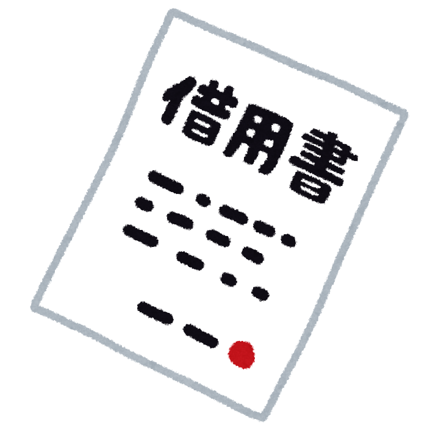
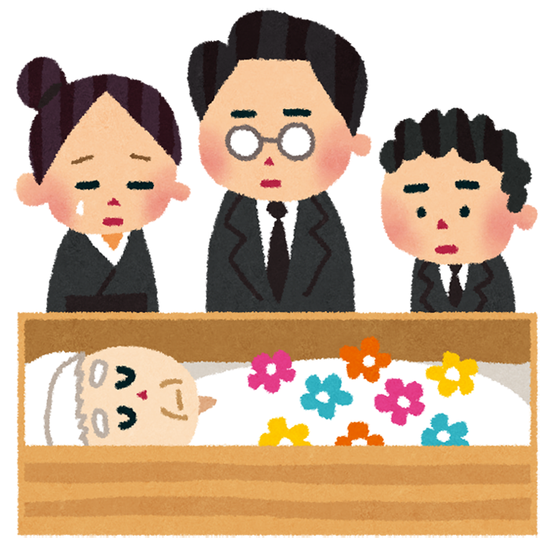
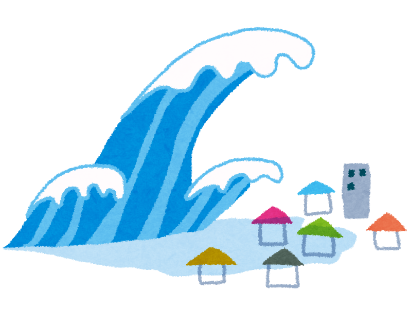
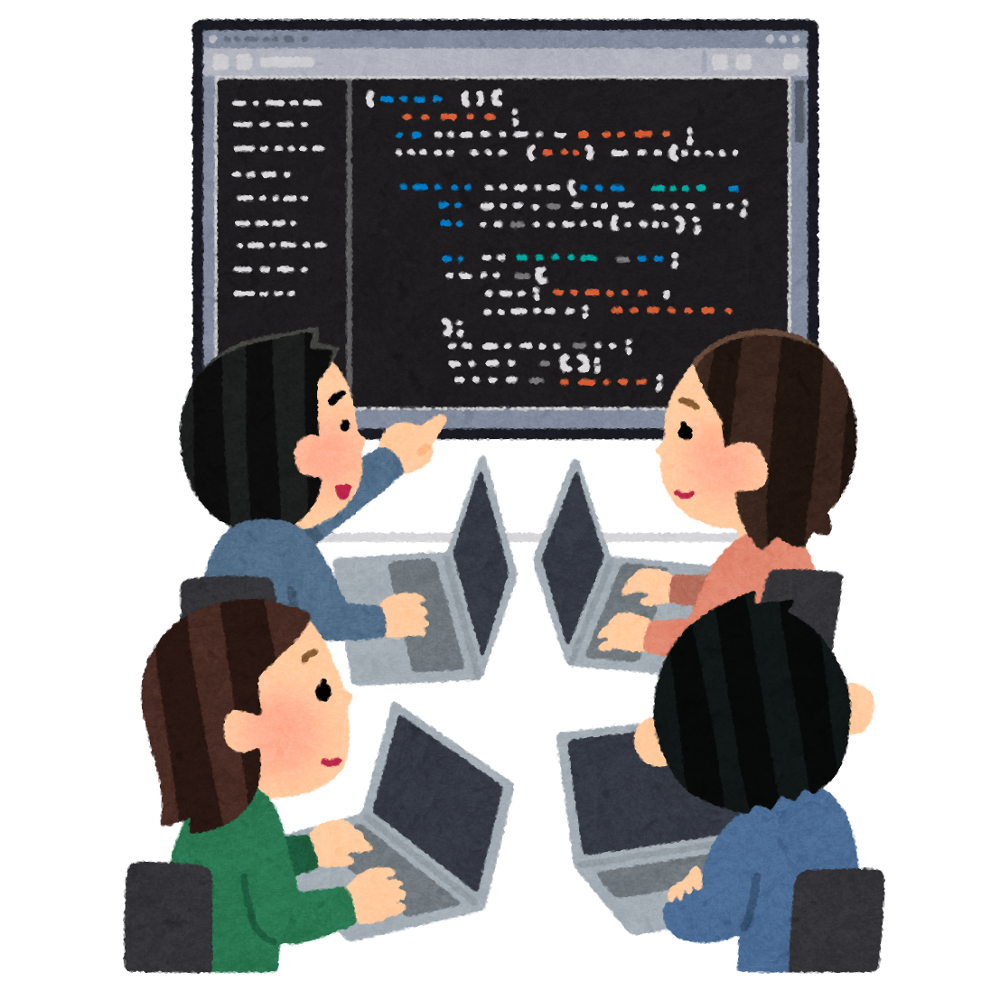
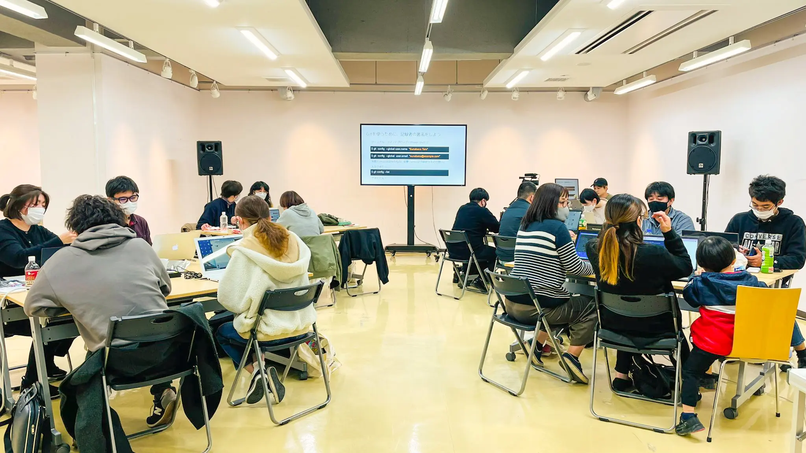

マネー

・お金借りたいと思ったら（即日）
①まずは親や家族、知人や友人を頼ろう
②それがダメなら、生命保険などの契約者貸し付け制度が使えないか確認しよう
③それでもダメなら消費者金融を利用しよう
・家を建てたいと思ったら
①予算を決めよう
②情報収集をしよう（ローン、諸費用、税金）
③工務店探し、土地探し
④設計プラン作成、見積り依頼
⑤住宅ローンの本申し込み、着工
旅行
・旅先でケガをしたり病気になったら
①まずは治療を受けよう（その際は必ず保険証を提示しよう）
②治療が終わったら加入している健康組合に連絡しよう（払い戻しを受けられるかも）
海外の場合は医療費が高額になる場合もあるため、事前に旅行保険等加入しておこう
クレジットカードの付帯保険だけでは保障不足の場合もあるため事前確認しておこう
結婚・出産

・子どもが産まれたら
①出生届を提出しよう（生後14日目までに）
②児童手当金の申請をしよう（出生日の翌日から15日以内がいい）
③健康保険の加入をしよう（出生後すみやかに）
④子どもの医療費助成を申請しよう（子どもの健康保険加入後）
⑤出産育児一時金の申請をしよう
⑥高額療養費の申請をしよう（診察日の翌日から2年以内）
・結婚したいと思ったら（恋人がいない場合）
①出会いの機会を増やそう
②自分を高めよう
③「結婚したい」と思っていることを公言しよう
④希望条件の立て直しをしよう
ケガ・病気
・入院したら（自分が）
①身の回りの日用品を準備してもらおう（下着やスマホの充電器は忘れがち）
②治療に専念しよう（治療のスケジュールは確認しておこう）
③高額療養費制度の事前申請ができるならしておこう
④事前申請ができなかった場合は事後申請しよう
・余命宣告されたら
①今やりたいことをする、書く、残す
②遺言を考える
・身近な人が余命宣告されたら
①いつもそばにいてあげよう
②やりたいことを聞いて実現してあげよう
③もしもの時を聞いておこう

葬祭
・親が亡くなったら
①死亡日当日
1、死亡診断書の受け取り（コピーの取得）
2、近親者への連絡
3、葬儀社の選定
4、遺体の搬送、退院手続き
②2日目
1、死亡届の提出
2、火葬許可証の取得
3、通夜
③3日目
1、葬儀
2、出棺、火葬
3、火葬済の証明の取得
4、初七日法要
④5～7日目
1、葬儀代の支払い
2、葬儀代の領収書の取得
⑤10日目
1、亡くなった人の本籍地の役所で除籍謄本を取得する
2、亡くなった人の住所地の役所で住民票の除票などを取得する
3、最寄りの年金事務所で受給者死亡届け等提出する
4、最寄りの警察署で運転免許証の返還手続き等行う
⑥11日～14日目
1、公共料金の解約（名義変更）
2、電話、インターネット、テレビ等の解約（名義変更）
3、生命保険の手続き（死亡保険金）
⑦14日目以降
1、遺産相続手続きの開始

トラブル
・逮捕されたら（通常逮捕)
①逮捕されると留置場に入れられ、取り調べを受ける
②逮捕後48時間以内に警察は検察官に事件を引き継ぐ送検を行う
③送致されると9割以上は勾留決定され約10日（最大20日）は勾留される

その他
・車の免許を取得したいと思ったら
①直接免許センターに行き、仮免許試験、本免許試験と学科試験を受けて合格する
②さすがに上記の方法では難しいので指定自動車教習所に入って免許を取る
・プログラミングに興味を持ったら
